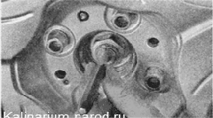
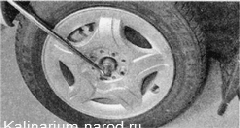

Подшипник ступицы переднего колеса - замена
Подшипник ступицы переднего колеса нерегулируемый. При появлении люфта в подшипнике его необходимо заменить.
Для выполнения работы необходим помощник, а также потребуются:
— надежная подставка под автомобиль;
— съемник внутренних стопорных колец;
— набор приспособлений для замены подшипника ступицы.
Снятие
Выпрессовывайте подшипник ступицы только в случае его замены, поскольку при демонтаже он, скорее всего, разрушится.
1. Подготавливаем автомобиль к выполнению работы.
2. Снимаем декоративный колпак с колеса.
3. Подкладываем противооткатные упоры под передние колеса автомобиля.
Попытка отвернуть гайку оси ступицы без выпрямления ее замятого края может привести к повреждению резьбы на оси.
4. Постукивая по кернеру молотком, отгибаем замятый в проточки вала привода край гайки (в двух местах).
5. Помощник нажимает педаль тормоза и удерживает ее в нажатом положении.
6. Торцовым ключом на 30 мм с длинным воротком ослабляем затяжку гайки ступицы переднего колеса.
7. Снимаем переднее колесо и отворачиваем гайку ступицы.
8. Снимаем суппорт тормозного механизма, не отсоединяя от него тормозной шланг.
9. Снимаем тормозной диск.
10. Отворачиваем два болта крепления шаровой опоры к поворотному кулаку.
И. Отворачиваем на несколько оборотов гайки крепления верхней опоры стойки к кузову.
12. Отжав нижний рычаг подвески вниз, отводим нижний конец стойки в сторону и выводим из ступицы хвостовик наружного ШРУСа.
При выполнении следующей операции усилие силового болта съемника должно прикладываться к торцевой поверхности ступицы, а не к кольцу подшипника.
13. Упираем лапы съемника в поворотный кулак и, вращая гайку болта, выпрессовываем ступицу из поворотного кулака.

14. Съемником сжимаем и снимаем стопорное кольцо с наружной стороны подшипника ступицы.
15. С обратной стороны поворотного кулака съемником сжимаем и снимаем другое стопорное кольцо подшипника ступицы.
16. Устанавливаем приспособление и выпрессовываем подшипник из поворотного кулака.
17. Если на ступице осталось внутреннее кольцо подшипника, спрессовываем его съемником из набора, либо универсальным двухзахватным съемником (для установки лап съемника на ступице имеются специальные выемки).
Установка
1. Тщательно очищаем от грязи и коррозии посадочное отверстие под подшипник в поворотном кулаке.
2. Съемником устанавливаем стопорное кольцо с наружной стороны подшипника.
При выполнении следующей операции (запрессовке подшипника) усилие силового болта съемника должно прикладываться только к наружному кольцу подшипника.
3. Запрессовываем новый подшипник в поворотный кулак до упора в стопорное кольцо.
4. Съемником устанавливаем стопорное кольцо с внутренней стороны подшипника.
При запрессовке ступицы силовой болт должен опираться только на внутреннее кольцо подшипника.
5. Приспособлением запрессовываем ступицу во внутреннее кольцо подшипника.
6. Вставляем вал привода в шлицевое отверстие ступицы.
7. Надеваем на вал упорную шайбу и заворачиваем новую гайку ступицы.
8. Устанавливаем все снятые детали в обратной последовательности.
9. Устанавливаем колесо и опускаем машину. Фиксируем колесо противооткатными упорами, а помощник нажимает педаль тормоза.
10. Затягиваем гайку подшипника ступицы моментом 225,6—247,2 Н-м (23-25,2 кгс-м).
11. Заминаем край гайки в проточки вала привода (в двух местах) и устанавливаем колпак ступицы.